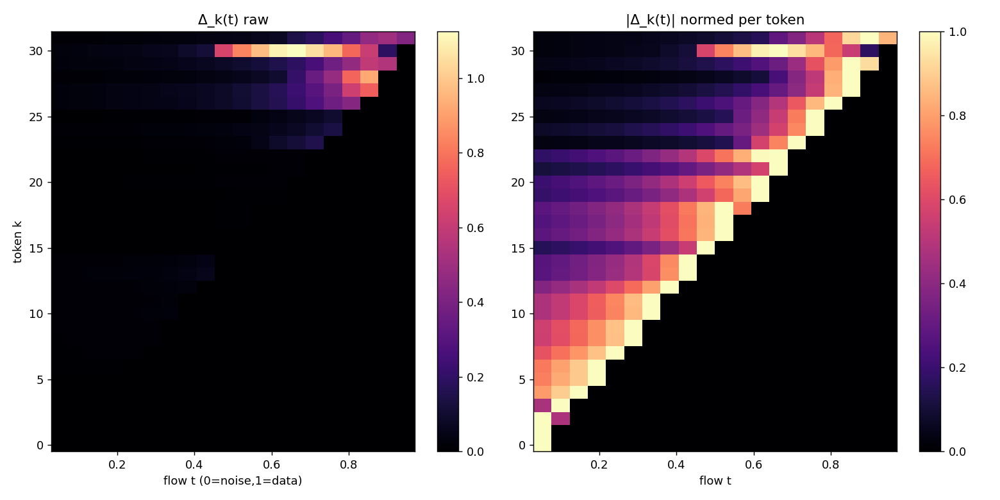
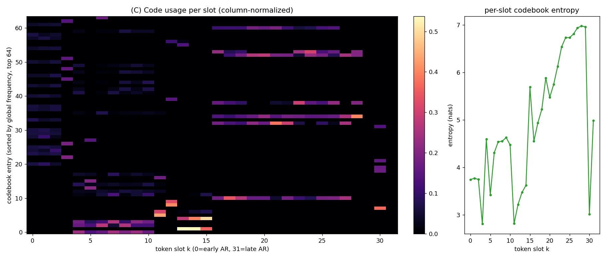
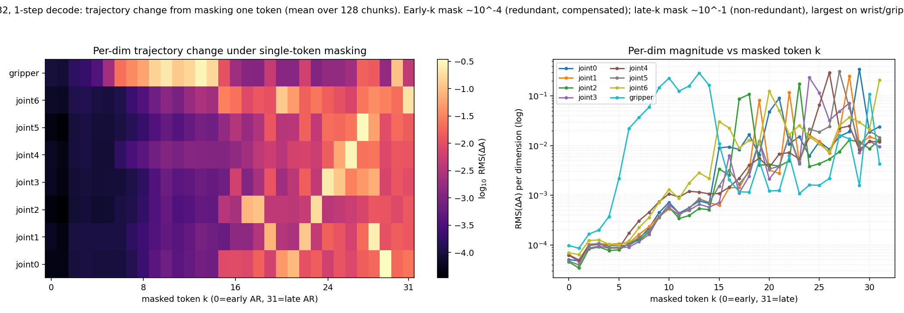
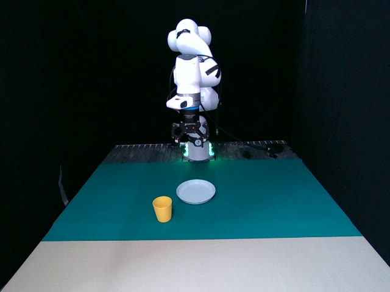
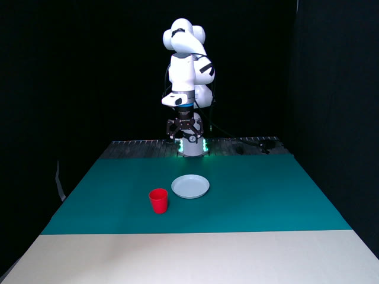
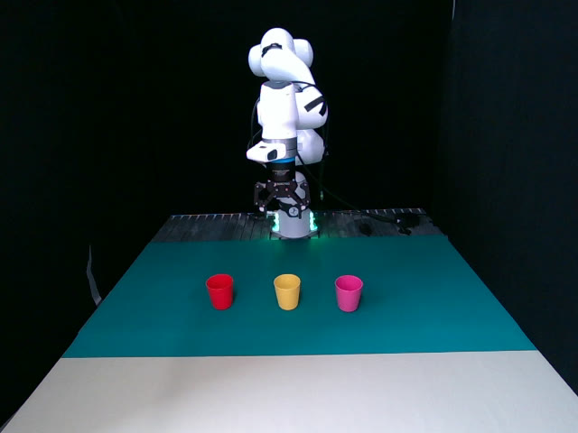

CATok reframes action tokenization as a causally structured generative process. Each discrete token encodes the residual reconstruction signal at a specific flow-matching stage, establishing a coarse-to-fine causal token space aligned with autoregressive modeling.
Autoregressive Vision-Language-Action (VLA) models offer a scalable path to robot learning, yet existing action tokenizers treat tokenization as a compression problem, producing representations that are semantically misaligned with the autoregressive backbone. We propose CATok, a causal action tokenizer that reframes tokenization as a causally structured generative process.
CATok introduces a conditional annealing mechanism that extracts action tokens by progressively annealing a flow-matching process: each token is conditioned on all preceding tokens and encodes the residual reconstruction signal at a specific noise level, establishing a coarse-to-fine causal token space whose generative semantics are structurally aligned with autoregressive modeling. A token-conditioned flow-matching decoder built on Multimodal Diffusion Transformer (MMDiT) reconstructs continuous action chunks from these discrete tokens with the precision of hybrid diffusion-head architectures. This discrete bottleneck enforces knowledge insulation by design, cleanly separating high-level semantic reasoning from low-level motor execution without requiring explicit attention masking.
Extensive evaluations across three simulation benchmarks demonstrate that CATok consistently surpasses existing tokenization methods in reconstruction fidelity–compression tradeoff and inference efficiency, while improving VLA task success rate, establishing a high-performance, scalable foundation for purely autoregressive VLA systems.
CATok consists of three components: (1) a Dual-Stream Action Encoder that maps raw action chunks into a compact set of latent query tokens via co-attention with an MMDiT-based transformer; (2) a Bottleneck Vector Quantizer that discretizes latent tokens into a finite codebook using factorized codes; and (3) a Flow-Matching Decoder with Conditional Annealing that reconstructs high-fidelity action trajectories while enforcing a coarse-to-fine causal structure.
The key design is the conditional annealing mechanism: at flow-matching timestep t, the first ⌊tK⌋ token embeddings are progressively masked, forcing each token to specialize in a distinct generative stage—from coarse global guidance at high-noise stages to fine-grained residual corrections as the trajectory matures. This induces a causally ordered hierarchy naturally aligned with autoregressive action generation.

Figure 1. CATok Pipeline. CATok encodes an action chunk with a Dual-Stream Encoder into latent queries, discretizes them via a Bottleneck VQ, and reconstructs actions using a Flow-Matching Decoder with Conditional Annealing. The annealing schedule assigns each token to a distinct stage of the flow trajectory, establishing a coarse-to-fine causal token space.

Figure 2. VLA-CATok. VLA-CATok feeds visual, language, and proprioceptive tokens into a VLM backbone to autoregressively predict causal action tokens. A frozen MMDiT flow-matching decoder reconstructs the final continuous action. Discrete tokens serve as the sole interface, naturally insulating the VLM's pretrained knowledge from action-specific gradients.
We evaluate CATok on three simulation benchmarks—LIBERO, SimplerEnv (Simpler-Bridge), and RoboTwin 2.0—against three representative tokenizer baselines: BIN (uniform per-dimension discretization), FAST (DCT-based compression with BPE tokenization), and OAT (learned fixed-length tokenizer with prefix-based decoding).
Higher task success rate. CATok achieves the highest success rates across all benchmarks (95.9% avg. on LIBERO), with the largest gains on long-horizon tasks (LIBERO-Long: 91.0% vs. 90.1% for FAST). Causal token ordering enables autoregressive policies to model long-range temporal dependencies more effectively.
Faster inference. CATok delivers 1.7× faster VLA inference than FAST and 3.9× faster than BIN, enabling more responsive real-time deployment.
Better fidelity–compression balance. CATok achieves a 3.6× stronger VRR×CR score than FAST at the same token count, demonstrating that causal structure improves reconstruction quality without sacrificing compression.
Higher training efficiency. CATok consistently reaches higher success rates at the same training step count, attributable to its stage-wise token factorization that makes each token prediction more informative for trajectory generation.
| Method | LIBERO | Simpler-Bridge | RoboTwin 2.0 | |||||||||
|---|---|---|---|---|---|---|---|---|---|---|---|---|
| Spatial | Object | Goal | Long | Avg. | Spoon | Carrot | Stack | Eggplant | Avg. | Clean | Rand. | |
| BIN | 0.586 | 0.878 | 0.680 | 0.604 | 0.687 | 0.542 | 0.333 | 0.208 | 0.708 | 0.448 | 0.213 | 0.221 |
| FAST | 0.960 | 0.998 | 0.962 | 0.901 | 0.955 | 0.500 | 0.375 | 0.375 | 0.625 | 0.469 | 0.478 | 0.478 |
| OAT | 0.428 | 0.876 | 0.704 | 0.276 | 0.571 | 0.417 | 0.208 | 0.167 | 0.667 | 0.365 | 0.229 | 0.233 |
| CATok (Ours) | 0.978 | 0.994 | 0.954 | 0.910 | 0.959 | 0.458 | 0.417 | 0.542 | 0.542 | 0.490 | 0.489 | 0.531 |
Table 1. Simulation benchmarking results. CATok consistently outperforms baseline tokenizers across all benchmarks. Blue bold values indicate best results per column.


Figure 5. Intrinsic properties of action tokenizers. (a–c) CATok8 achieves the highest VRR×CR score (16.85), outperforming all baselines at the same compression level. (d–e) Encode and decode latencies on log scale—CATok achieves lower latency than FAST with comparable or better downstream performance.
Causal Predictive Ordering. Per-token Shannon entropy decreases monotonically in the forward token order (Figure 6(a)), while reversing the order flips the trend—confirming the learned ordering is directional and causal. FAST and BIN show no such structure.
Stage-wise Generative Semantics. t-SNE of VQ embeddings (Figure 6(b)) reveals clear slot-dependent geometry: early tokens form smooth elongated regions, late tokens form compact separated clusters. Prefix reconstructions (Figure 6(c)) show coherent coarse-to-fine trajectory updates, confirming each token contributes a distinct generative increment.

Figure 6. CATok produces causal tokens with generative semantics. (a) Causal ordering: entropy decreases in the forward token order and increases in reverse, while FAST and BIN show weaker positional structure. (b) Token embedding geometry: t-SNE map shows clear slot-dependent organization progressing from smooth early-token regions to compact late-token clusters. (c) Prefix reconstruction: increasing token prefixes produce structured trajectory updates, with each token contributing a meaningful generative increment to the decoded action.
Distinct, non-redundant token roles — validated by native-decoder intervention
The analyses above (Figure 6) provide indirect evidence—entropy ordering, embedding geometry, and prefix reconstruction—that CATok tokens carry a coarse-to-fine structure. A natural question is whether this structure reflects distinct generative roles for individual token positions, or whether the annealing schedule merely produces a useful nested ordering with substantial information redundancy across tokens. To settle this, we conduct a direct token-swap intervention on the native flow-matching decoder.
We use the trained CATok tokenizer checkpoint (K=32, codebook 4096, horizon 20) together with its native MMDiT flow-matching velocity network vθ and ODE decoder D—the same modules used at inference, not a separately trained prefix decoder. On 128 held-out action chunks (Franka, 7-DoF + gripper), we encode each chunk into its token-embedding sequence Q = (q1, …, qK) and intervene on one token position at a time while holding the flow state xt, flow time t, and the noise realization fixed. We use two intervention types: a donor-swap (replace qk with the same-position embedding from another chunk, keeping the replacement within the slot's empirical distribution) for the velocity-level probe (Analysis A), and a zero-mask / leave-one-out (set qk = 0, removing token k's information entirely) for the trajectory-level probe (Analysis C). The zero-mask is motivated by Analysis B: because the codebook is concentrated in early slots and diverse in late slots, masking tests whether each token's contribution is distinct and non-redundant.
For each token k and flow time t we measure the influence Δk(t) = MSE(vθ(xt, t, Qswap(k)), x1−x0) − MSE(vθ(xt, t, Q), x1−x0), i.e., the increase in velocity-prediction error caused by swapping token k at flow time t. Because the conditional-annealing schedule masks token k outside its active range, the raw matrix has triangular support; we therefore normalize within each token's active range and examine where the influence concentrates, rather than treating visibility itself as evidence of specialization.

Figure 7. Token × flow-time influence matrix Δ(t). Top: 32 individual tokens, raw (a) and per-token-normalized (b). Bottom: 8 groups of 4 tokens, raw (c) and per-group-normalized (d); cyan “+” marks the theoretical peak stage t=(2g+1)/(2G). In both granularities the matrix has triangular support (token k is visible only for t < (k+1)/K, confirming the conditional-annealing schedule κ(t)=tK), and each token's influence concentrates near its own on-switch boundary rather than spreading uniformly across its active range. Grouping smooths per-token noise and yields a cleaner monotonic peak-t trend (corr(g, t*) = 0.995 vs. 0.985 ungrouped).
Three findings establish distinct, stage-specific generative roles:
- Triangular support. Token k is visible only for t < (k+1)/K, confirming the conditional-annealing schedule κ(t) = tK with suffix masking. Swapping a token masked-out at time t produces Δ ≈ 0 by construction, so non-trivial influence appears only where the token is actually active.
- Sparsity, not redundancy. Only 72 of 640 (k, t) cells exceed 5% of the maximum |Δ|. The influence is concentrated in a small set of (token, stage) pairs rather than spread broadly. If tokens carried redundant information, swapping any token would broadly perturb the prediction; the sparse pattern rules out the "substantial information redundancy" alternative.
- Peak at the token's own flow stage. For each token k, the flow time of peak |Δk(t)| within its active range is t* ≈ k/K (corr(k, t*) = 0.985, slope ≈ 1/K). Early tokens peak at high-noise (coarse) stages; late tokens peak at low-noise (fine) stages—exactly the coarse-to-fine specialization the annealing schedule is designed to induce.
Before intervening at the trajectory level, we first check whether individual token slots carry distinct, non-redundant information by examining which codebook entries each slot selects across 2,048 held-out action chunks. The left panel of Figure 8 is a column-normalized usage heatmap (x = token slot k, y = codebook entries sorted by global usage frequency); the right panel plots the per-slot entropy of the code distribution. Early slots draw from a concentrated subset of codes (low entropy, ≈ 3–4 nats)—encoding common structure shared across chunks—while late slots draw from a diverse set (high entropy, ≈ 6–7 nats), encoding instance-specific detail. Per-slot entropy rises monotonically with the AR index (corr(k, entropy) = 0.68), mirroring the learned stage specialization of Analysis A at the code-usage level. This concentration/diversity gradient motivates the mask intervention in Analysis C: if early tokens share common codes (largely redundant), masking an early token should be compensated by the others, whereas the instance-specific codes of late tokens are non-redundant, so masking a late token should move the decoded trajectory substantially.

Figure 8. Codebook usage per token slot. Left: column-normalized count of each codebook entry (rows, sorted by global frequency) at each token slot k (columns); bright bands indicate slot-specialized codes. Right: per-slot codebook entropy, increasing from early (concentrated, ≈3.7 nats) to late (diverse, ≈7 nats), corr(k, entropy) = 0.68. Early slots draw from a concentrated code subset (shared common structure, largely redundant); late slots from a diverse set (instance-specific, non-redundant). This learned concentration gradient motivates the leave-one-out mask intervention in Analysis C.
Motivated by Analysis B's codebook-concentration gradient, we intervene by masking (zeroing) one token at a time and decoding the intervened sequence with the native decoder at 1 step (matching the deployed VLA’s flow_steps=1). If early tokens' shared common codes make them redundant, masking them should be largely compensated; if late tokens' instance-specific codes are non-redundant, masking them should move the trajectory substantially—a direct test of whether each token's contribution is distinct.

Figure 9. K=32, 1-step decode: trajectory-change magnitude under single-token masking (leave-one-out). Left: per-dimension RMS trajectory change (log color) vs masked token k; right: per-dimension RMS(ΔA) vs k (log y, 8 dims). Masking early tokens (k≤4) changes the trajectory by only ~10^-4 (dark)—their concentrated, shared codes are redundant and the other tokens compensate; masking late tokens (k≥12) changes it by ~10^-1–10^-0.3, up to ~1000× larger, concentrated in the wrist joints and gripper. This is the validation Analysis B predicts: each token carries distinct, non-redundant information, with the contribution magnitude growing along the AR order.
Interpretation. We do not claim that CATok tokens follow a pre-specified frequency (or any other hand-coded) structure. What the conditional-annealing schedule produces is a learned gradual refinement of the action chunk during flow-matching generation (Figure 5c)—a holistic, progressive fine-tuning, not a prescribed low-to-high decomposition. The three analyses simply validate that, within this learned process, individual token positions acquire distinct, non-redundant generative roles rather than carrying interchangeable information. Analysis A is the span-normalized velocity-level test: each token's influence peaks at its own flow stage (t* ≈ k/K, corr 0.985 ungrouped / 0.995 grouped), and only 72/640 cells exceed 5% of max |Δ|, ruling out “substantial information redundancy.” Analysis B reads the same learned specialization at the code-usage level: early slots select a concentrated code subset (low entropy, corr 0.68), late slots a diverse set. Analysis C, motivated by B, masks one token at a time and decodes at 1 step as a direct validation: masking early tokens barely moves the trajectory (redundant, compensated), while masking late tokens produces large, dimension-specific deformations (~1000× larger, in the wrist/gripper)—the non-redundancy B predicts. The learned gradual-refinement process thus endows tokens with distinct, stage-specific, non-redundant roles, validated at the velocity (A), code-usage (B), and trajectory (C) levels.
To verify that CATok transfers to real-robot deployment under camera noise, lighting variation, and hardware differences, we design a suite of real-robot evaluation tasks. The VLA built on CATok as its tokenizer consistently outperforms the QwenFAST baseline, with significant gains in spatial generalization, color generalization, and long-horizon task completion.
We collect 362 trajectories of "pick up the yellow cup and place it on the plate." and 220 trajectories of "stack the cups." Using Qwen3.5-VL as the backbone, we train two VLAs that differ only in their tokenizer—QwenFAST and QwenCATok. CATok is pretrained on the collected real-robot data together with InternA1 joint data, so that its action reconstruction accuracy matches that of FAST. We evaluate on three task suites:



Figure 10. Scene layouts for the three real-robot task suites. Left to right: Pick-Spatial, Pick-Color, Stack-Long.
- Pick-Spatial. The task is to pick up the yellow cup and place it on the plate. We fix 10 relative cup-and-plate positions; each model rolls out twice per position (20 rollouts total) and we report the success rate. Tests spatial generalization.
- Pick-Color. The task is to pick up the red cup and place it on the plate. The cup-plate relative position is fixed, and only the yellow cup seen during training is replaced with a red cup; each model rolls out 10 times. The training set contains no trajectories of picking up a red cup. Tests color generalization.
- Stack-Long. A long-horizon task: the robot must first pick up the red cup and stack it onto the yellow cup, then pick up the pink cup and stack it again. The relative positions of the three cups are fixed; each model rolls out 40 times. Tests long-horizon task completion.
We deploy QwenCATok (our causal action tokenizer integrated into a VLA policy) alongside the QwenFAST baseline on a real Franka manipulator across three contact-rich tasks—pick, pick-red, and stack. Each cell below is a single, unedited end-to-end rollout.
Figure 11. Real-world rollout comparison. Top row: QwenCATok (ours). Bottom row: QwenFAST baseline. Columns (left to right): pick, pick-red, stack.
| Method | Pick-Spatial | Pick-Color | Stack-Long |
|---|---|---|---|
| QwenFAST | 0.45 | 0.30 | 0.275 |
| QwenCATok (Ours) | 0.65 | 0.50 | 0.475 |
Table 2. Real-world success rates. QwenCATok outperforms QwenFAST on all three tasks with a uniform +20pp absolute improvement. Blue bold marks the best result per column.
These real-world gains corroborate the mechanisms identified in simulation. CATok's causally structured token space—each token encoding a semantically distinct, coarse-to-fine generative stage—aligns the discrete bottleneck with the autoregressive backbone, and this semantic alignment generalizes to real-world perturbations: spatial repositioning (Pick-Spatial, 20 rollouts, 0.45→0.65, +44% relative) and out-of-distribution color (Pick-Color, 10 rollouts, 0.30→0.50, +67% relative). The largest gain appears on Stack-Long (40 rollouts, 0.275→0.475, +73% relative), consistent with the same stage-wise causal factorization that drives training efficiency in simulation—by making each token prediction more informative, causal token ordering lets the policy better capture the long-range temporal dependencies required for compositional, long-horizon tasks. Overall, CATok's structural properties—semantic token alignment and stage-wise causal factorization—translate from simulation into robust and consistent real-world gains.